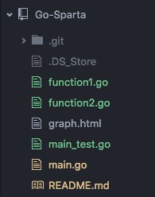
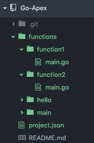

| Section | ||
|---|---|---|
| Documentations | https://github.com/mweagle/Sparta | https://github.com/apex/apex https://github.com/apex/go-apex |
| Hello World | https://play.golang.org/p/8Xrf9g-U-J | https://play.golang.org/p/8Exy5dQjBz |
| Folder Structure |  |  |
| Command |
$ go run main.go provision --s3Bucket $S3_BUCKET $ go run main.go delete |
$ apex init $ apex deploy --region ap-southeast-2 $ apex delete |
| Infrasturcture | go build to linux and translate stack from Domain Specific Language to Cloud Formation | go build to linux and deploy with aws-sdk-go/service/lambda create method |
| Provision Files |
binaries
cloud formation |
- |
| Logging | github.com/Sirupsen/logrus | * |
| S3 EventSource |
it creates 2 Functions :
1. MyTransformerStack-CUSTOMxGOAWSxS3LAMBDAEVENTSOURC-DZOF5L1SLBK5 - MyTransformerStack: CloudFormation CustomResource to configure Custom::goAWS::S3LambdaEventSourceResource 2. MyTransformerStack-maintransformMessageLambda23f8f-K4T0S5XHD392 (S3 events go here) - MyTransformerStack: main.transformMessage |
it creates 1 function : project_transformMesage |
| Action Per Event | Invoke the function once / Event | Invoke the function once / Event |
| Code to consume S3 events |
package main
import (
"encoding/base64"
"encoding/json"
"io/ioutil"
"log"
"net/http"
"github.com/Sirupsen/logrus"
"github.com/aws/aws-sdk-go/aws"
"github.com/aws/aws-sdk-go/aws/session"
"github.com/aws/aws-sdk-go/service/s3"
sparta "github.com/mweagle/Sparta"
spartaS3 "github.com/mweagle/Sparta/aws/s3"
)
func transformMessage(
event *json.RawMessage,
context *sparta.LambdaContext,
w http.ResponseWriter,
logger *logrus.Logger) {
logger.WithFields(logrus.Fields{
"RequestID": context.AWSRequestID,
"Event": string(*event),
}).Info("Request received")
var lambdaEvent spartaS3.Event
err := json.Unmarshal([]byte(*event), &lambdaEvent)
if err != nil {
logger.Error("Failed to unmarshal event data: ", err.Error())
http.Error(w, err.Error(), http.StatusInternalServerError)
}
readFromS3andDoMapping(lambdaEvent)
}
func main() {
var lambdaFunctions []*sparta.LambdaAWSInfo
transformMessageFn := sparta.NewLambda(sparta.IAMRoleDefinition{},
transformMessage,
nil)
transformMessageFn.Permissions = append(transformMessageFn.Permissions,
sparta.S3Permission{
BasePermission: sparta.BasePermission{
SourceArn: "arn:aws:s3:::rr-go-sparta",
},
Events: []string{"s3:ObjectCreated:*"},
})
lambdaFunctions = append(lambdaFunctions, transformMessageFn)
sparta.Main("MyTransformerStack",
"Simple Sparta application that demonstrates core functionality",
lambdaFunctions,
nil,
nil)
}
|
package main
import (
"encoding/base64"
"encoding/json"
"io/ioutil"
"log"
apex "github.com/apex/go-apex"
apexS3 "github.com/apex/go-apex/s3"
"github.com/aws/aws-sdk-go/aws"
"github.com/aws/aws-sdk-go/aws/session"
"github.com/aws/aws-sdk-go/service/s3"
)
func main() {
apexS3.HandleFunc(func(event *apexS3.Event, ctx *apex.Context) error {
readFromS3andDoMapping(event)
return nil
})
}
|
| Time | 2000-2600ms per action (get file from s3 + mapping) | 700-800ms per action (get file from s3 + mapping) |